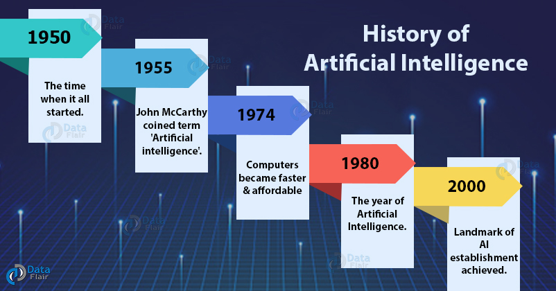
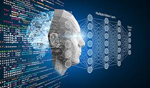
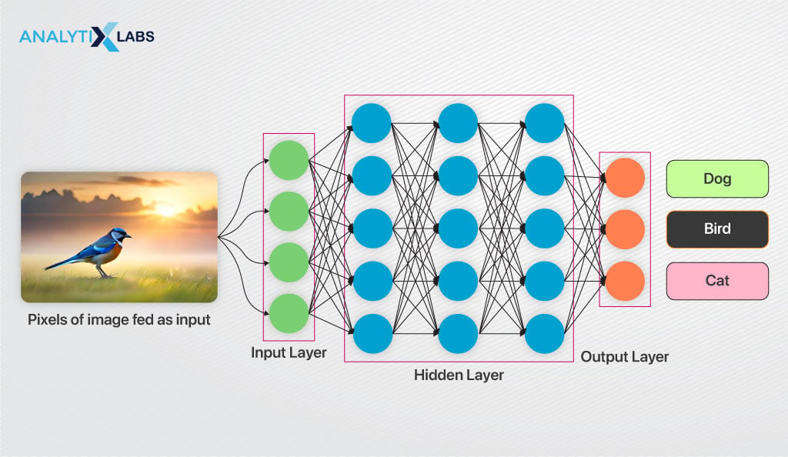
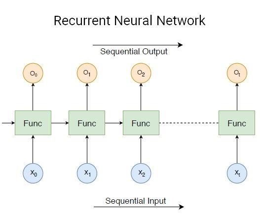
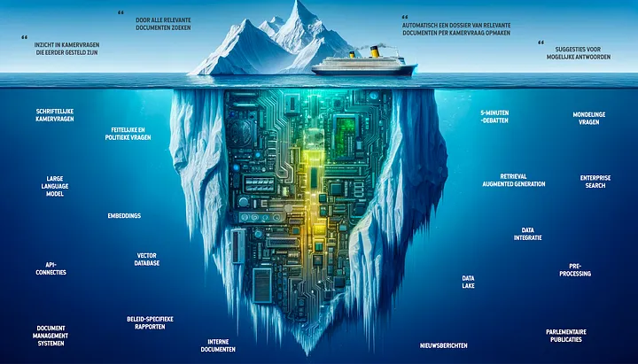

Artificial Intelligence has been around since the mid-20th century. In 1956, the term "Artificial Intelligence" was coined, and since then, the field has seen massive growth...
Today, AI and Machine Learning are used in numerous domains such as healthcare, finance, autonomous driving, and more. With advancements in neural networks and deep learning...
The future of AI and ML is exciting with concepts like Artificial General Intelligence (AGI) and more specialized neural networks. It promises a world of automation, innovation...
CNNs are primarily used in image processing tasks such as object detection, face recognition, etc.
RNNs are used for sequential data like time series, natural language processing, and more.
GANs are a class of AI models used to generate new data, like creating realistic images, music, and more.
